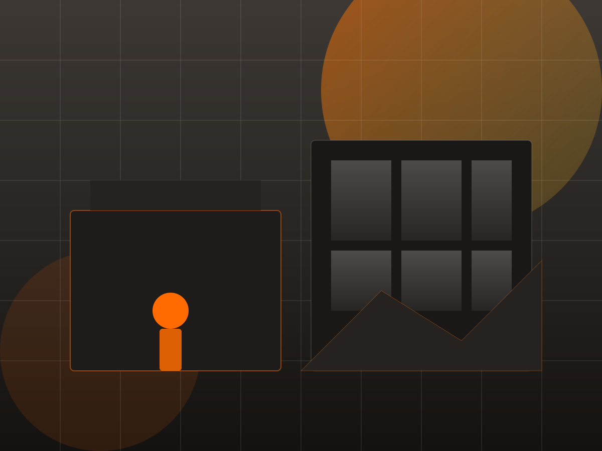
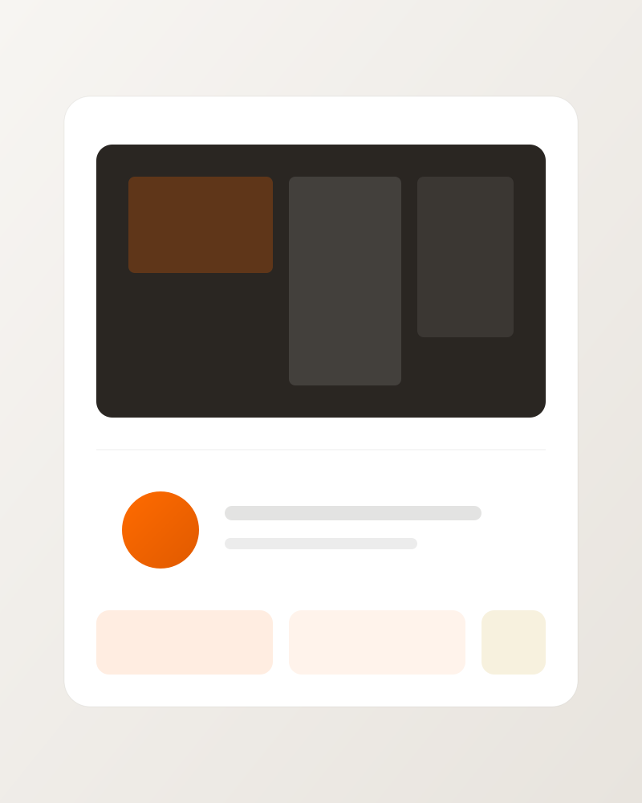

Проектирование
Частные дома и МКД — опыт в Европе и СНГ.
Аудит проектных решений, техническая консультация и технадзор в ИЖС — защищаем ваш бюджет и качество дома.

AcademiaStroy — команда инженеров и проектировщиков с профильным образованием. Полный цикл контроля: от проектирования до технического надзора на объектах ИЖС.
Частные дома и МКД — опыт в Европе и СНГ.
От фундамента до кровли на объектах ИЖС.
Выявление ошибок и оптимизация бюджета.
Государственные экспертизы и нормы.

Проверка проекта до стройки — ошибки, перерасход, риски.
«Второе мнение» инженера — онлайн, телефон или выезд.
Контроль стройки по проекту — удалённо или с выездом.
Проверка проекта до стройки
Независимая проверка проекта до стройки — конструктив, материалы, соответствие нормам.
Результат: проект с рекомендациями · экономия сметы 10–30%
Ответ инженера в удобном формате
Быстрые ответы инженера по проекту, узлам и этапам — «второе мнение» без долгих экспертиз.
от 3 000 ₽ · онлайн до 60 мин · видео, телефон, выезд
Фото этапа, чертежи и список вопросов — специалист ознакомится заранее и сразу перейдёт к сути.
Контроль на каждом этапе
Контроль стройки по проекту — материалы, технологии и скрытые этапы.
Результат: дом по проекту, без скрытых дефектов и лишних трат.
Работаем независимо от подрядчиков — в ваших интересах, с прозрачными условиями и понятным результатом.
После аудита проекта вы оптимизируете бюджет
Удалённый технадзор и консультации онлайн
Прозрачные цены без скрытых доплат
Не привязаны к подрядчикам и материалам
Оставьте заявку — проконсультируем бесплатно по всем услугам.
Перезвоним в течение рабочего дня